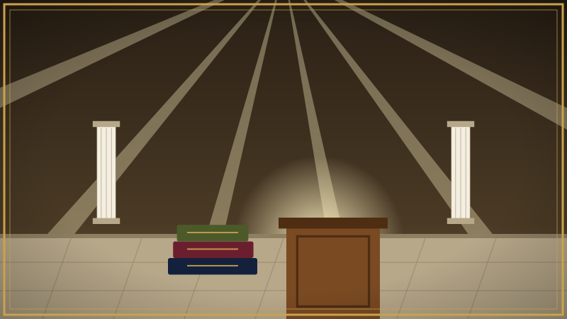
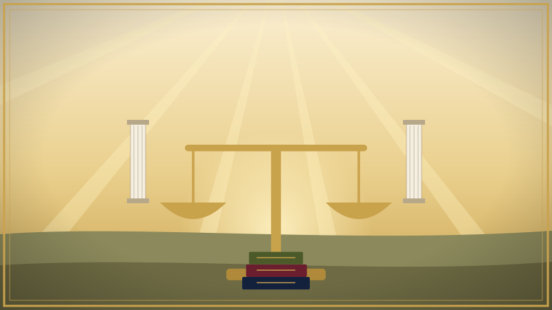
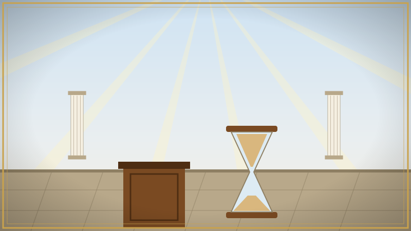

- Enrollment
- Reading
- Assessment
- Results
Robert's Rules of Debate
The book of order for debate: the maxims, the Law, and the Rules that govern how a debate is conducted and how a point is settled — not techniques for arguing, but the procedure by which disagreement ends in a decision. Each section is a reading with a short check. Enter your name as it should appear on your certificate, then begin.
Reading
1. What These Rules Are

Robert's Rules of Debate are not a course in the art of arguing. They are a book of order. Just as Robert's Rules of Order govern how a meeting is conducted — who may speak, for how long, how a motion is raised, how it is decided — these Rules govern how a debate is conducted, so that two people who disagree can reach a decision instead of a quarrel. They do not tell you what to say. They tell you the procedure by which what is said gets settled.
The Scripture's instruction for the church is that all things be done decently and in order. A debate without order is noise: each side talks past the other, the loudest voice wins the room, and nothing is ever actually decided. A debate under these Rules is different. Time is measured. Points are taken one at a time. Objections are raised and ruled on. Nothing stands until both sides agree to it. And when the debate ends, something has been settled that stays settled.
The Rules are built in three layers, and you must learn them in that order. At the bottom are the Maxims: the self-evident truths every rule rests on. Above them are the Rules themselves, each one traceable to a maxim. Alongside them is the Law, which fixes which copy of the Rules is official. The rest of this course sets out each layer exactly as written, and then the formats a debate may take and the procedure for pinning a point down.
2. The Maxims

A maxim is a truth that needs no proof; it is the ground the rest stands on. There are four, and the fourth explains why the other three matter so much.
- What rules apply to one side must apply to all sides equally.
- Conversation is a math equation. It does not matter one's opinion; it either equates or does not equate. It is either true or it is false.
- Truth is consistent across all areas.
- Every Rule must be based on a Maxim.
The first maxim is the maxim of the just balance. The Scripture calls divers weights and divers measures an abomination to the Lord; a rule that binds one side and not the other is a false weight, and any decision reached under it is worthless. Before you ever object to what an opponent does, ask whether you would accept the same objection against yourself.
The second maxim is the reason a debate can be decided at all. If the matter were opinion, there would be nothing to decide; you would each keep your own. But a statement either matches reality or it does not, the way an equation either balances or does not. Neither side's feeling about it changes the answer. This is why the Rules treat every point as true or false, and why a debate ends when the equation has been worked, not when someone gets tired.
The third maxim keeps a debater honest across subjects. What is true in Scripture is true in history, in science, and in the street; the truth does not contradict itself when you change rooms. So a point established in one area may be brought to bear in another, and a claim that is true here but false there has been shown false.
The fourth maxim is the guard on the whole system. No rule may be invented for convenience, to favour a side, or because it seems clever. If a rule cannot be traced to a maxim, it is not a rule.
3. The Law and the Rules
The Law stands apart from the Rules. It does not govern the debate; it governs the Rules themselves — which copy is the real one. It reads:
Most humans cannot be trusted. Therefore, upon my death, the last version that I personally made of these Rules, Laws, and Maxims shall be the only official version. All copies must be complete and in English to be considered official. All decisions shall be based on the only official version.
The reason is plain. Rules that can be quietly edited are no rules at all; whoever holds the pen holds the verdict. So the Law fixes the text: the author's own last version, complete, in English, and nothing else. A partial copy, a translation, or an "improved" edition decides nothing.
Now the Rules, exactly as written:
- Equal time mandate.
- Exception: reparation of time wasted.
- All sub points must be agreed upon.
- Any sub points not agreed upon shall table the debate, and a new debate initiated for that sub point.
- Objections.
- Off topic.
- False info.
- Penalties:
- Sustained.
- Warning.
- Reparations of wasted time: the time both were side-tracked is given to the opponent to speak uninterrupted, in addition to the equal time mandate.
- All previous debates shall be precedence, unless one wants to debate a previously established point.
- All maxims are rules.
- All points shall stand by unanimous vote.
- A debater's vote shall not be considered for any point they disagree with themselves on.
- All points and debates shall be booleans.
Read them with the maxims in hand. Rule 1 is the first maxim applied to the clock: each side gets the same time, and the only exception is to repay time one side stole from the other. Rules 2 and 3 are how a large question is worked: a point is made of sub points, every one of them must be agreed, and if one is not, the whole debate is set aside and that sub point becomes its own debate — you do not build on a disputed foundation. Rule 4 gives each side exactly two objections, off topic and false information, and three penalties in rising order: the objection is sustained, a warning is given, and if time was wasted, the wronged side is repaid that time to speak uninterrupted. Rule 5 means nothing is argued twice: what earlier debates settled stands, unless someone chooses to reopen that point as a debate of its own. Rule 6 makes the maxims themselves enforceable. Rules 7 and 8 are how a point is decided: it stands only when every debater agrees, and a debater cannot vote a point up or down that he himself disagrees with — you cannot say "I disagree" and "let it stand" in the same breath. Rule 9 is the second maxim made law: every point and every debate has exactly two possible outcomes, true or false, and a point that cannot be put that way is not yet a point.
4. Formats

A format is the shape a debate takes: how the time is divided and what a turn may contain. The Rules do not change from one format to another; only the shape does.
Small Group. Turns of matching time. During your turn, you may ask the other party questions as part of your turn. You may deal with deception, with questioning, and with answers that are not yes or no, during your turn.
Notice what this format does with the equal time mandate. It does not merely give each side the same total; it gives each side the same turn, and everything — your statements, your questions, your handling of the other side's evasions — happens inside your own turn. If you ask a question, the time it takes to ask and to be answered is yours. If the other party answers a yes-or-no question with a speech, or answers with something untrue, you deal with that in your turn too, and the objections of Rule 4 are how you deal with it: false info, off topic, and the reparation of the time it cost you. The other side's turn is theirs, uninterrupted, on the same terms.
Other formats may be added, but every one of them must keep the maxims: the same rules and the same time for every side, and every point resolved as true or false.
5. Settling a Point
The Rules decide when a point stands. This last section is the procedure by which a point is pinned down so precisely that it can be decided. Most debates fail not because the two sides disagree but because they never agree on what they are disagreeing about.
Use transcriptions for pin-downs. Memory is a poor witness. When a point is to be settled, work from the written transcript of what was said, and pin the point to the exact sentence. A man cannot be held to what he did not say, and he cannot escape what he did.
Both agree to what the sentence means. Before a sentence is judged, both sides must agree on what it says. If you each read it differently, you are not debating one point but two, and Rule 3 applies: table it and settle the meaning first.
Both agree to what would prove it wrong. A point that nothing could prove wrong cannot be proved right either; it is not a boolean, and Rule 9 excludes it. So before the argument begins, both sides state what evidence or reasoning would falsify the point, and agree to it.
Agree to the logic; then the logic becomes the judge. Once both sides have agreed on the meaning, on the test, and on the logic that connects them, neither side is the judge any longer. The logic is. Whatever it yields, both are bound to it, because both agreed to it before they knew the answer.
Win by agreeing. A point is won in one of two ways: the other side agrees to it directly, or the other side agreed to the logic and the logic leads to it. There is no third way. A point is not won by volume, by the crowd, by the clock, or by the other side's exhaustion. It stands by unanimous vote, and unanimity is reached either at once or by the steps both sides accepted.
Assessment
Fifteen questions. The passing standard is 80%; 90% or above is awarded with honors. Answer every question, then submit. The questions and their answers are placed in a different order every time.
Return to the Reading First
The assessment was not passed. Go back through the reading, then come back. The assessment reopens in
Every question needs an answer before you submit.